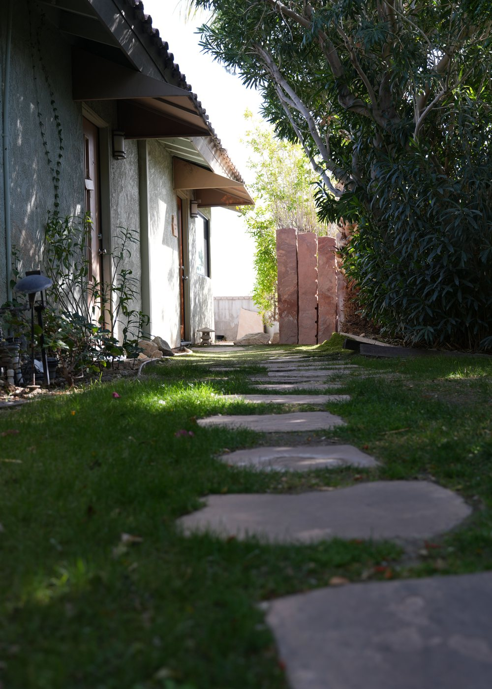
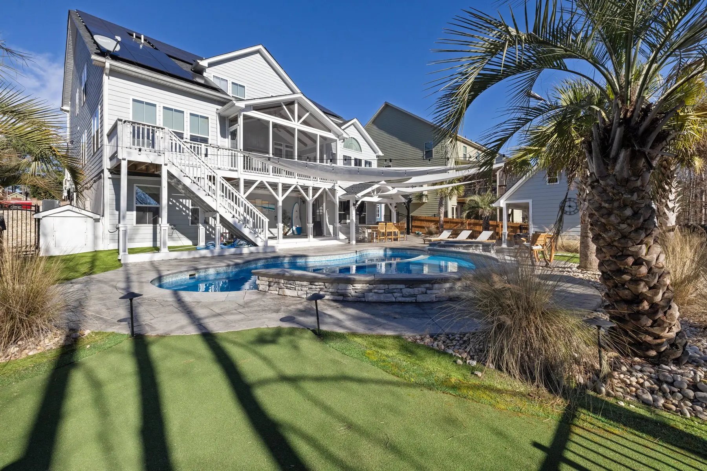
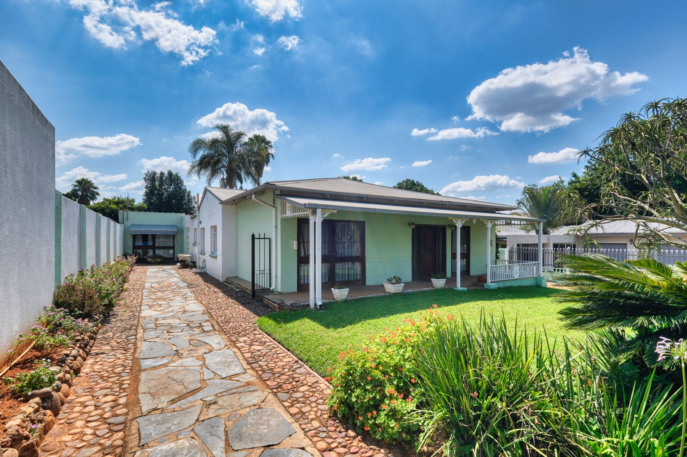
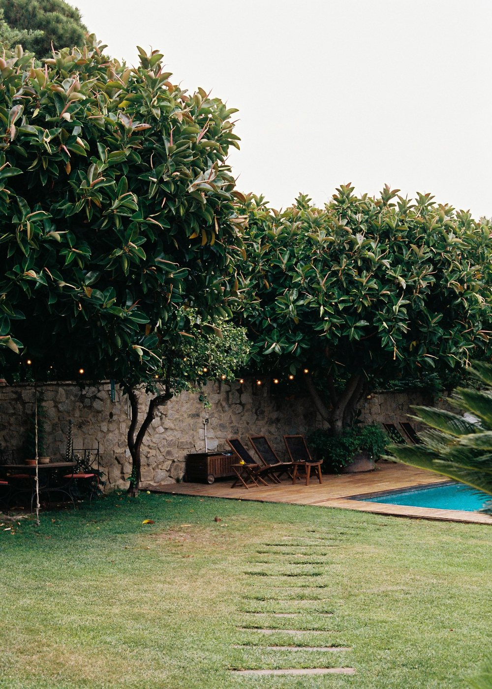

Complete yard transformations
A cohesive plan for outdoor rooms, circulation, planting, lighting, and the edges that make everything feel finished.
Discuss your whole yardLandscape design & build · Greater Orlando
Thoughtful outdoor spaces built around shade, drainage, resilient plants, and the way your family actually spends time outside.
Complimentary walkthroughs are offered for qualifying landscape projects in the Greater Orlando area.
Start with the way you want to live
Instead of treating plants, hardscape, and water as separate purchases, Cypressline plans the full experience—from the view through your window to the path under your feet.
A cohesive plan for outdoor rooms, circulation, planting, lighting, and the edges that make everything feel finished.
Discuss your whole yardLayered, climate-aware planting that frames your home, softens hard edges, and stays considered as it matures.
Refresh the first impressionDurable transitions and gathering spaces that handle wet feet, afternoon heat, and Florida downpours with grace.
Make outside easier to use
Designed around real movement, not just the overhead plan.A yard is a small ecosystem
A beautiful rendering is only the beginning. The plan also needs to account for where water moves, how the sun shifts, which surfaces hold heat, and what you are willing to maintain.
Imagine the next version of home
These illustrative concepts show how the same design principles can answer very different priorities.



Photography is used for art direction only. Cypressline Outdoor Co. is fictional; these images do not represent completed Cypressline projects.
From scattered ideas to one clear plan
You will know what is being decided, what comes next, and where your input matters—before materials arrive or soil moves.
Talk through priorities, maintenance, drainage, existing conditions, and how the yard is used today.
Turn those needs into a coordinated direction for circulation, materials, planting, and project scope.
Review selections, sequencing, access, and the practical decisions that protect the build.
Keep communication clear through installation, walkthrough, and the guidance that follows completion.
A more useful first conversation
Share what is not working and what you want outside to feel like. A qualifying walkthrough would explore the site, priorities, and likely path forward.
Demo only. Nothing entered here is transmitted or stored.
Before the walkthrough
For this fictional concept, the focus is coordinated residential transformations: planting, circulation, gathering spaces, and the details that help them work together.
No. A useful first conversation starts with the problems you notice, how you want to use the yard, and what level of upkeep feels realistic.
Cypressline is a fictional portfolio concept, so this page deliberately avoids invented testimonials, statistics, awards, and client claims.
No. The form is a non-submitting interaction demo and does not retain data. Visit cfwebdev to discuss a real website project.